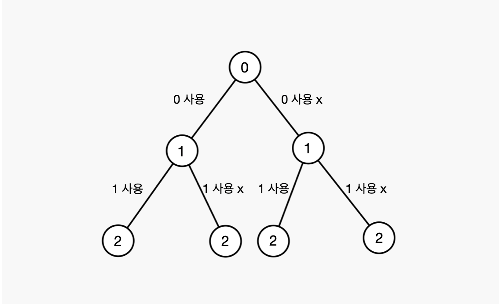
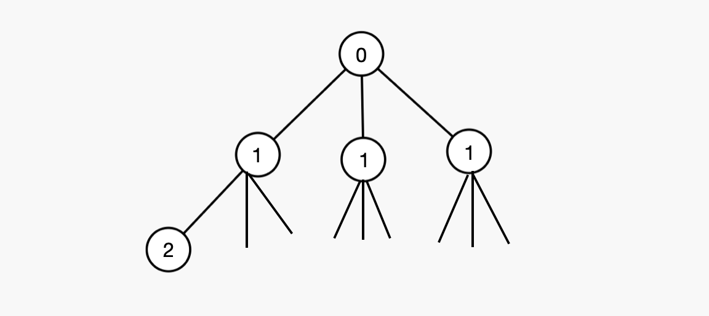

[Algorithm] DFS
▶️ DFS (깊이 우선 탐색)
DFS는 깊이 우선 탐색으로 재귀함수를 이용해서 가지처럼 뻣어나가는 알고리즘이다
DFS를 사용하기 편한 방법으로는 다음과 같은 형태를 이용하면 좋다
const DFS = () => {
if(조건){
내용(조건이 맞아 결과에 추가하는)
}else{
내용(재귀호출)
}
}
▷ 부분집합문제
두가지로 분류한다 (해당 숫자를 사용하거나, 사용하지 않거나)

const result = [];
const temp = [];
function DFS(v){ // v는 인덱스
if(v > n) { // n까지의 원소
result.push(temp.slice()) // 복사해서 저장
return;
}
else{
temp.push(v);
DFS(v+1);
temp.pop();
DFS(v+1);
}
}
DFS(1);
- DFS 함수내
if문에서 조건을 넣어주고 충족한다면 결과값에 저장한다(위의 n은 예시) else문에서는 temp라는 배열에push를 해주게 되는데 이때는 해당 값을 사용한다는 뜻이고 그 아래pop은 넣어줬던 값을 뺌으로서 사용하지 않겠다는 뜻이다 (사용했을때 재귀호출, 사용하지 않을때 재귀호출)
▷ 중복순열
중복순열 문제는 부분집합과 다르게 중복을 허용하므로써 가지가 두개만 나올 수 없다
예시) 1,2,3의 중복 수열

수열의 길이만큼(예시에서 3개이므로 가지도 3개씩) 가지가 생성된다 따라서 재귀 호출도 3번!
const answer = [];
let temp = [];
const DFS = (L) => {
if(L === 수열개수){
answer.push(temp.slice());
}else {
for(let i = 1; i <= arr.length; i++){
temp.push(i);
dfs(L + 1)
temp.pop();
}
}
DFS의 인자인 L은 level을 뜻하는 것으로 깊이를 나타낸다
if문에서는 조건에 맞으면 결과를 저장해준다else문에서는for문을 사용해서 배열의 길이만큼 반복해준다
▷ 중복이 없는 순열
중복수열을 사용할때와 다른 점이 한가지 있다면 사용여부를 확인하는 체크배열을 생성해서 검사를 해준다
let answer = [];
const len = nums.length;
const check = new Array(len).fill(0); // 체크배열
let temp = [];
const dfs = (L) => {
if(L === m){
answer.push(temp.slice());
}else{
for(let i = 0; i < len; i++){
// check(같은 수가 있는지 확인)
if(check[i] === 0){
check[i] = 1; // 수를 사용하면 체크
temp.push(nums[i]);
dfs(L + 1);
check[i] = 0; // 사용한 후 pop과 함께 체크해제
temp.pop();
}
}
}
}
dfs(0);
▷ Memoization (메모이제이션)
계산한 값을 저장해둠으로서 불필요한 같은 계산을 하지 않도록하기 위해 사용한다
피보나치 수열을 예시로 들자면 다음과 같다
// 계산 값을 저장할 배열
const dy = new Array(n+1);
const fibo = (n) => {
if(n < 2) return n;
// 저장한 값이 있으면 저장값을 사용
if(dy[n] !== undefined) return dy[n];
// 저장값이 없으면 계산하고 배열에 저장
return dy[n] = fibo(n-1) + fibo(n-2)
}
return fibo(n);
fibo(10)은 fibo(9) + fibo(8)이다 또 fibo(9)는 fibo(8) + fibo(7)이 된다
이때 fibo(8)이 겹치게 되는데 메모이제이션을 사용하지 않는다면 계산을 두번 반복하게 된다 이는 아래로 내려갈수록 더욱 잦아지게 된다 따라서 속도가 느려질 수 있는데 이를 개선하기 위해 메모이제이션을 사용하면 배열에 값이 있는지를 확인하고 있다면 그 수를 사용해 불필요한 계산을 방지할 수 있다
▷ 참고 - 함수와 스텍
함수가 호출이 되면 내부적으로 스텍에 함수가 들어가게 된다 이때 스텍프레임이라고 하며 이 스텍 프레임 각각에는 함수의 정보가 담긴다
- 매개변수
- 지역변수
- 복귀주소
재귀함수는 전역변수를 다루지 않는다 → 지역변수를 사용해서 문제를 해결하자!